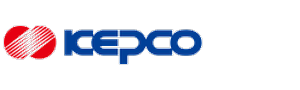
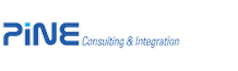
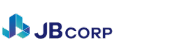
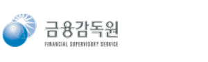
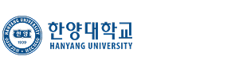
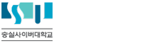
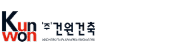
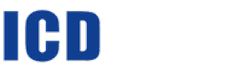
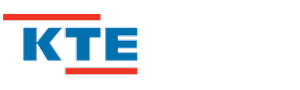
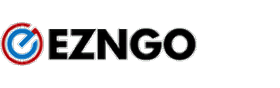

PROPOSAL
한수원 모바일 UI
구조제안서
구조제안서
Fixed MLM v1.0
모바일 화면 구조 표준안을 직접 설계 · 발표해 프로젝트 수주로 연결. 기술 문서가 영업 성과가 된 케이스.
일부 발췌 공개
발췌 보기
설계 · 디자인 · 퍼블리싱을 끊김 없이 한 사람이 끝냅니다.
PL로 다수 프로젝트 리딩. 한수원 ERP 팀원 4명 리드.
자동화 스크립트 활용으로 작업 기간 50% 이상 단축.
한전 · 한수원 · 한전KDN 등 에너지 · 공공 시스템 반복 수행.
취향이 아니라 디자인 사조 · 표준의 맥락으로 클라이언트를 납득시킵니다.
“버튼이 너무 밋밋한데, 좀 더 화려하게 안 될까요?”
공공 · 금융 서비스에서 플랫 · 미니멀이 표준이 된 이유(신뢰감, 정보 명료성, 접근성 기준)를 사례와 함께 설명하고, 화려함 대신 명료함을 선택한 근거를 제시해 방향을 합의했습니다.
7년을 관통하는 두 개의 축 — UI의 틀을 세우고, 그 틀을 자동화로 확장했습니다.
이젠고 UI 개발 패키지의 앞단을 정립하다. 개별 프로젝트가 아니라, 다른 프로젝트들이 딛고 설 기반을 만든 작업입니다.
데브팩으로 세운 UI 기반을, 이번엔 사람이 아니라 도구가 찍어내게. 만드는 것에서 만드는 방식을 만드는 것으로.
퍼블리셔로 시작해 설계 · PL까지. 왼쪽 레일이 곧 성장 곡선입니다.
화면을 만드는 데서 끝나지 않고, 팀이 따라올 수 있는 가이드 · 제안서 · 규칙을 직접 씁니다. 회사에서도, 개인 프로젝트에서도 같은 방식으로.
모바일 화면 구조 표준안을 직접 설계 · 발표해 프로젝트 수주로 연결. 기술 문서가 영업 성과가 된 케이스.
컬러 · 타이포 · 컴포넌트 표준을 정의한 UI 가이드. 기획자–디자이너–개발자가 같은 기준으로 일하게 만드는 문서.
반복 컨버전 작업을 자동화하는 도구를 만들고, 누구나 쓸 수 있게 매뉴얼까지 작성. v1.9까지 개정 운영.
색 · 타이포 · 간격을 토큰으로 정의(KRDS.md)하고, AI에게 일을 시키기 위한 규칙을 문서화(CLAUDE.md). 카파시가 말한 context engineering을 실제 프로젝트에 적용했습니다.
기획부터 DB · 프론트 · 배포까지, 혼자 끝낸 결과물.
메이플랜드 길드 운영 올인원 플랫폼. 확성기 로그 실시간 검색, 보스 타이머, 공대 모집, 레이드 정산·분배를 한 곳에서 처리합니다. Discord OAuth 로그인, 봇 DM 알림, 역할 기반 권한, 관리자 패널까지 — DB 설계부터 프론트엔드, 배포·운영을 혼자 구축한 실운영 서비스입니다.
기존 사이트를 크롤링해 HTML 구조를 재설계하고 리디자인. 배포와 Git 커밋 내역으로 작업 과정을 남겼습니다.
말이 아니라 기록으로. 위 결과물들의 커밋 내역입니다.
숙련도 바 대신, 실제 프로젝트에서 쓴 것과 쓸 수 있는 것으로 구분했습니다.
에너지 · 공공부터 금융 · 교육 · 제조까지, 산업을 넘나든 21개 고객사.
모바일 원전건설 · ERP 고도화

한국전력공사사내 포털 EP 리디자인
통합 원전건설관리 표준화

파인씨앤아이한수원 발전운영 포털

중부도시가스차세대 웹 (Java)
전산시스템 구축

금융감독원경영정보 시스템
채권추심 포털 · 그리드 UI
비축농산물 전자입찰 PC/Mobile
Devpack SDI 모바일 패키지
차세대 경영주 모바일

한양대학교교내정보시스템 고도화

숭실사이버대학교학사관리 시스템
SAP 기반 업무포털
DOOIT 시스템

건원건축KIS ERP · 채용관리 모바일

ICD안성 포털사이트
통합 개발 · 운영 플랫폼 (삼성 계열)
입출고 관리 시스템

KTE통합포털 사이트

이젠고사내 솔루션(Devpack) 디자인 · 자동화